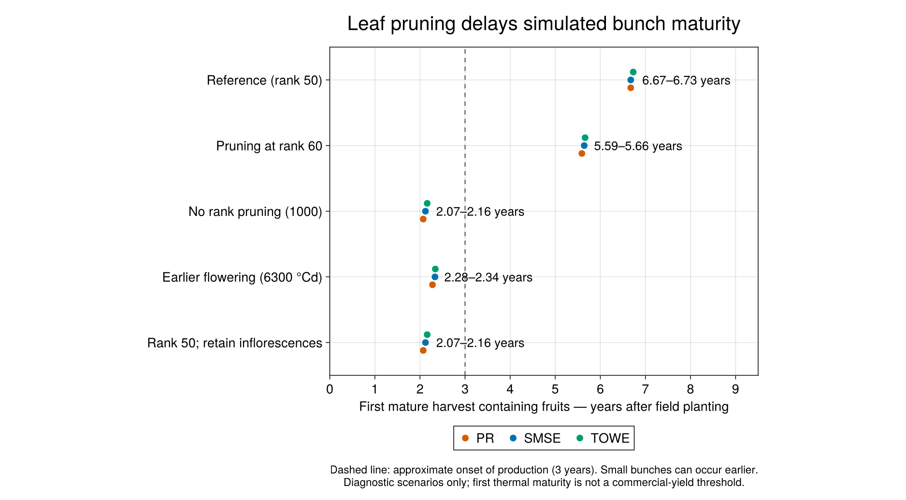

Why leaf pruning must not harvest an immature bunch
The CIGE evaluation exposed very late simulated fruit production. Before fitting physiological parameters, we checked which events were actually being counted as harvests. Removing a leaf at rank 50 was also marking its phytomer and reproductive organ :harvested. A little stalk biomass could consequently appear as harvested yield before flowering, while the immature organ could never complete development. This coupling was an intentional historical management policy, rather than a new migration regression. Separating the two events changes that policy for the physiological model and prevents its output being mistaken for mature harvest.
Correct the event before calibrating its consequences
This change separates three events:
- Leaf pruning: remove leaf area, structural leaf component masses and leaf reserves using the existing leaf-pruning policy. It no longer terminates the associated reproductive organ or changes the phytomer's reproductive state.
- Abortion: a decision made by the abortion model remains terminal. The subsequent phenology calculation cannot overwrite it with flowering or fruit development on the same timestep.
- Mature harvest: the existing reproductive thermal threshold still declares maturity. The bunch-harvest model emits daily mass and fruit-count pulses only on the harvest day, then resets those pulses. Aborted biomass enters litter.
Harvest-triggered leaf pruning is retained. This patch does not introduce natural leaf senescence, an age-dependent reproductive clock, earlier flowering parameters, or an explicit management operation for removing immature bunches. If a management scenario removes an immature bunch, that event needs its own explicit policy; leaf pruning alone is no longer treated as proof of a mature harvest.
Restore rainfall recharge of the rooted soil view
The BP water model tracks bulk and rooted-accessible water as overlapping views of the same soil. Rainfall was first consumed while updating the bulk view, then the already reduced remainder was used to update the rooted view. The rooted view consequently missed recharge even while the bulk soil received rainfall. Resetting its infiltration calculation to effective rainfall corrects that bookkeeping. It does not add rain twice to an independent inventory: bulk and rooted water must not be summed as two disjoint stores.
This is a numerical correction, not a fitted change of drought sensitivity, root-depth parameters, soil capacity, or evapotranspiration. Focused wet/dry and shallow-root checks accompany the correction. It can materially change water stress and therefore invalidate parameter compensation in previous calibrations.
An existing limit remains for roots shallower than the top-layer boundary Z1: the native bulk and rooted compartments partition evaporative and transpirable capacity differently. Under prolonged extraction, the bulk transpirable pool can be exhausted before the rooted pool, invalidating their shared extraction balance. This patch corrects rainfall routing only; it does not repair that shallow-root capacity/extraction model. Rain-only recharge is checked at shallow and deeper roots, while quantitative dry-down closure is checked at roots reaching or exceeding Z1, matching the archived audit's stated scope.
How we identified the delay

In the archived 1 October 2026 diagnostic, the reference used the same nursery forcing, weather, random seeds and standard physiological parameters across the five scenarios. The decisive comparison retained rank-50 leaf pruning but allowed inflorescences to continue developing. The first thermal-threshold harvest containing fruits advanced as follows:
| Site | Reference | Rank 50, inflorescences retained |
|---|---|---|
| PR, Nigeria | 6.67 years | 2.07 years |
| SMSE, Indonesia | 6.67 years | 2.12 years |
| TOWE, Benin | 6.73 years | 2.16 years |
Ages are years after field planting, with 548 nursery days before planting. Nursery irrigation was a prescribed scenario, not a measured CIGE treatment. The first small bunches were about 1.73 kg dry mass. A first fruit-bearing thermal harvest can precede commercially significant production around three years. The beginning of CIGE monitoring does not establish the true first harvest date.
The figure is an archived diagnostic of the mechanism, not a newly fitted or rerun prediction from this branch. The changed rank-60, no-pruning and flowering scenarios provide context and are not adopted by this patch. The exact plotted summary, checks and SHA-256 provenance are saved beside the figure. The historical contrast predates the abortion and rooted-recharge corrections in this branch, so its exact dates are not asserted as the output of this full PR.
Scope of the fix and other historical changes
The original investigation later tested leaf senescence, reproductive development clocks, fruit-number and size responses, and carbon costs. Those are distinct changes. They are not silently included here, and results from those larger model bundles must not be attributed to this fix set alone. The older emitted-phytomer object-identity correction was already upstream; this is not a second implementation of that fix.
Reproduction and review
The historical analysis used XPalm_calibration_new/1-code/10_reproduction_audit.jl and 11_reproduction_results.jl, with frozen output family 2-results/reproduction_audit_20261001. The original diagnostic used XPalm 0.7.0 and PlantSimEngine 0.15.0 in its recorded environment. Raw CIGE observations are not bundled in this package.
The package regression tests in test/test-reproductive-lifecycle.jl exercise actual leaf-pruning stock removal, preservation of immature female development in a compiled palm, abortion precedence, and one-day harvest pulses. They test implementation behavior, not field validation. Published v0.7.0 numerical fixtures remain unchanged. The separately named v0.7.0-lifecycle-dev candidate under test/references/regression/ records the corrected default full-cycle behavior for review; it is not a release or field validation. Exact event/count checks, tight continuous tolerances and released-file checksums are retained.
test/test-rooted-recharge.jl checks rainfall routing, overflow and dry-day bookkeeping in both overlapping soil views, with Float32 and Float64 statuses, and compiles a soil scenario using the native root-growth hard call. Its dry-down extraction checks have the root_depth >= Z1 domain described above; they do not establish a closed shallow-root extraction model or validate field soil parameters.